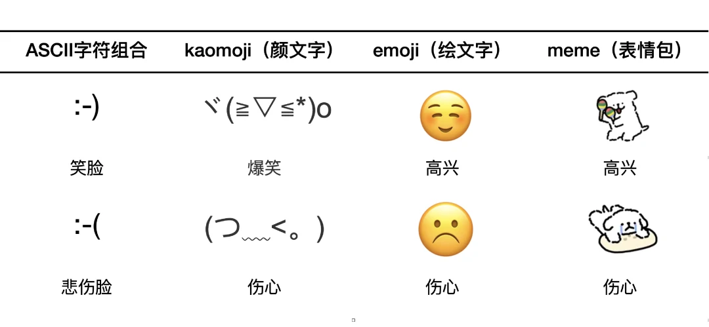
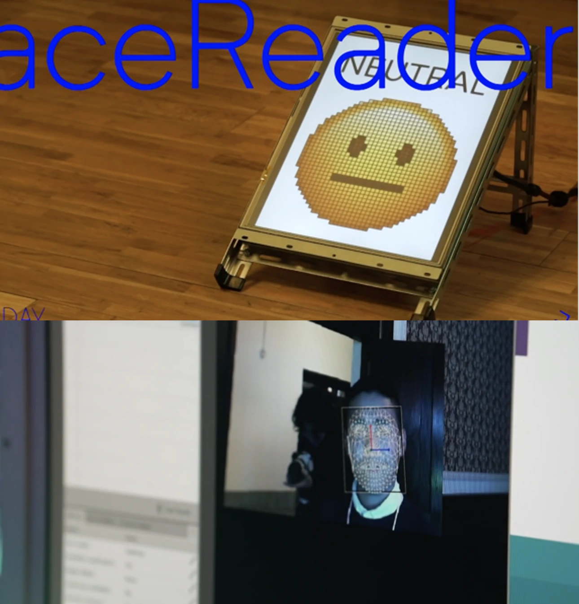
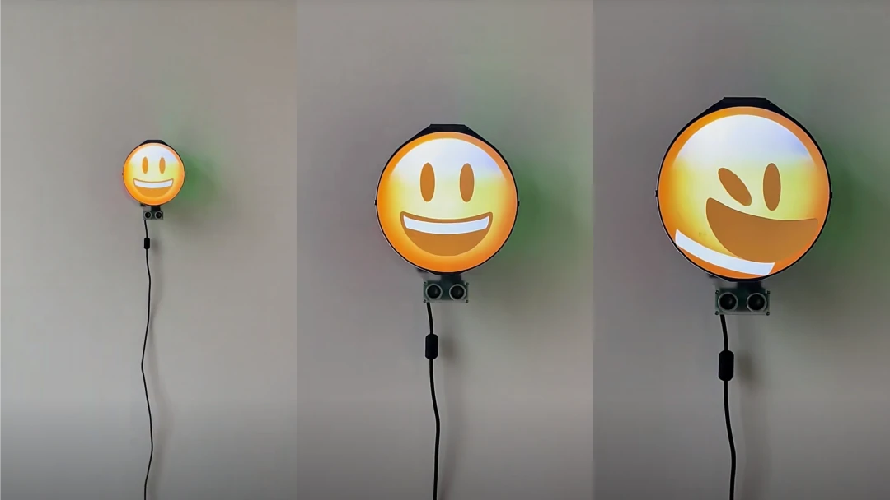
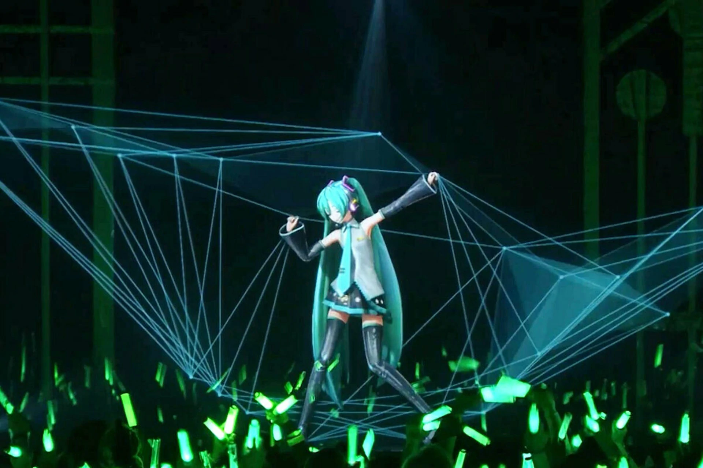
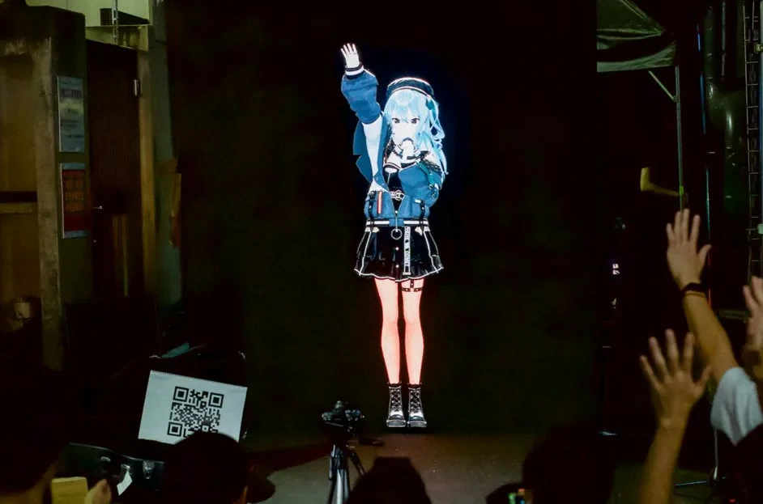
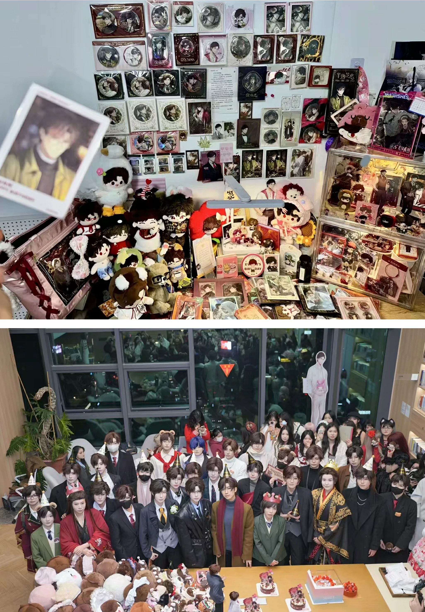

Human.zip: Ego Compression in Digital Culture
Yuting XIE
🎓+💻 sous la direction de David-Olivier et Damien Bais Lartigaud;
memoire de fin d'étude dnsep mention création numerique;
ESADSE 2025
-
Abstract
-
Introduction: Self-Expression and Data Intrusion in the Digital Age
-
1. Human.zip: Self-Compression and Refinement in Digital Social Interaction
-
1.1 The Concept of Self-Compression
-
1.2 Compressed Self and Presence
-
1.3 Human.zip and the Cultural Logic of Social Media
-
2. Emojis and the Presence of Self in Digital Socialization
-
2.1 Emojis as Tools for Self-Compression
-
2.2 Emojis and Self-Manifestation
-
2.3 The Symbolic Transmission and Individual Presence
-
2.4 Emoji as a Social Medium for the Compressed Self
-
3. The Fragmentation of Virtual Identity in Digital Compression
-
3.1 The Creation of Virtual Identities: Platform Logic and Symbolic Compression
-
3.2 The Psychological Mechanisms of Virtual Identity Fragmentation
-
3.3 Virtual Idols and Multiple Identities
-
3.4 Social and Cultural Impacts of Virtual Identity Fragmentation
-
4. The Interaction Between Game Characters and Player Fantasies in Otome Games
-
4.1 Otome Game Characters: From Fantasy to Self-Projection
-
4.2 The Paper Doll Phenomenon and Emotional Investment
-
4.3 Players’ Fantasy of the Perfect Self: Commercialization and Character Creation
-
4.4 Emotional Compression in Virtual Interactions
-
Conclusion
-
Reference
Abstract
In an era of rapid digital development, social platforms have provided new spaces for individuals to present themselves and construct their identities through symbolic means. However, the penetration of digital technologies has also given rise to the phenomenon of ego compression, where individuals express themselves in simplified forms such as emojis, short texts, and images, gradually forsaking the richness and diversity of emotions found in traditional communication.
This paper introduces the concept of 'Human.zip', describing how, in digital social interactions, individuals compress their identities into symbolic data packets that are easy to share and understand. This compression not only affects self-awareness but also reshapes individuals' presence in virtual spaces, presenting them in a more superficial and simplified manner. Through an analysis of emojis and social platforms, this paper explores how digital symbols have become central elements in the construction of the self, and how this trend has had profound effects on cultural and social interactions.
Introduction: Self-Expression and Data Intrusion in the Digital Age
In an era of rapid digital development, social platforms have become crucial spaces for individuals to express themselves and construct their identities. However, as digital technologies penetrate every aspect of social life, our daily existence is gradually being invaded by data (dataism, Harari, 2016). Through smart devices, social media, and instant messaging tools, individual behaviors are quantified, recorded, and disseminated. While this process enables convenient communication, it also profoundly impacts the way we construct our sense of self.
In virtual spaces, people's presence no longer depends on their physical existence, but is instead expressed and perceived through symbolic means. This symbolic representation is reflected in social conversations via emojis, tone markers, and dramatized image performances (Goffman, 1956). These digital symbols not only serve to convey information, but also function as vital media in reshaping the self-image. However, compared to the rich emotional and bodily interactions of real-life communication, the dimensions that digital symbols can carry are relatively limited. The trend of symbolization compresses the self into a highly simplified, easily shareable image, a phenomenon we may refer to as "compressed self."
In this process of digital transformation, individuals are not only expressing themselves in external spaces but are also beginning to accept this simplified logic of self-construction at a deeper level. Emojis, as a quick and efficient form of emotional expression, have become a core element of social interaction. However, this symbolic emotional expression sometimes overlooks the complexity and depth of the individual, with the emotions presented being simplified and standardized, unable to encompass the diversity and intricacy of human emotions (Turkle, 2011). This trend prompts us to reflect on the changes in presence and authenticity within digital social spaces, which in turn affect individuals' relationships with others and with society.
As digital social interaction becomes the mainstream mode of communication, individuals not only present themselves symbolically, but the dominant role of these symbols and visual forms subtly leads to a new way of self-recognition: self-presentation is compressed into easily digestible and shareable formats. While this compressed self may be more suited to the digital social environment, it can also lead to cognitive flattening and even the alienation of individual identity.
This paper aims to explore how digital social platforms construct the compressed self through symbolic means, and analyze from a phenomenological perspective how this symbolization affects individual presence. We will first introduce and define the concept of Human.zip, describing the phenomenon of self-compression and refinement in digital social interactions. Then, through an analysis of emojis, social personas, and fantastical digital avatars, we will examine how this compression process manifests across various digital media. Finally, by analyzing otome games characters, we will delve into how the refined fantasies in digital social spaces are formed within cultural logic.
1. Human.zip: Self-Compression and Refinement in Digital Social Interaction
In today's digital social platforms, individuals face a phenomenon of self-compression, especially through symbolic means such as text, images, and emojis. This phenomenon reflects the simplification of human self-presentation, akin to compressing complex individual identities into easily shareable and understandable data packets. This compression process is not only a technical transformation but profoundly affects how individuals perceive themselves and others. In this context, we introduce the concept of Human.zip to shed light on how digital social platforms reshape individual identities and presence through symbolic compression mechanisms.
1.1 The Concept of Self-Compression
Human.zip provides a visualized description of the compression and refinement individuals undergo in self-expression. On digital platforms, self-presentation is often highly simplified and symbolic, particularly on social media and instant messaging apps, where this simplification is especially evident (Baym, 2010). Through photos, short texts, emojis, and status updates, individuals' multifaceted identities are compressed into specific symbols or labels. For instance, on Instagram, users often showcase an idealized, symbolic version of themselves through curated photos and meticulously crafted captions, thereby omitting the complexity and diversity of daily life (Van Dijck, 2013).
These compressed "data packets" not only simplify individual identities but also create a new social contract, requiring individuals to convey as much information as possible within limited time and space. Algorithms further amplify this trend on digital platforms, pushing users to present more idealized versions of themselves through likes, comments, and sharing mechanisms (Zhao, 2005). These symbolic behaviors not only shape individual presentations on the platform but also subtly influence their behavior patterns and social interactions.
However, this process of self-compression is not merely a surface-level simplification. It also reflects the controlling logic behind digital social platforms. Individual expressions on these platforms often need to conform to the platform's ideal image standards, which are reinforced by algorithms, aesthetic norms, and interaction structures. This reinforcement mechanism can lead individuals into a cycle of excessive self-presentation and self-evaluation, further driving their self-compression and detaching them from the multidimensional aspects of their real identities.
1.2 Compressed Self and Presence
In digital social spaces, individuals' sense of presence no longer relies on physical existence but is reconstructed through symbols and digital images. Goffman (1956) proposed that individuals present different "masks" in social settings, showcasing multiple identities in social interactions. In digital social spaces, however, these "masks" become even more simplified and fluid, with individuals' selves compressed into easily shareable images. While these images effectively convey certain emotions and information, they simultaneously diminish the depth and complexity inherent in physical presence (Turkle, 2011).
Emojis, as one of the core communication tools in digital social spaces, have become an essential supplement for emotional expression. Yet, while efficient, this symbolic communication method distorts emotional expression. In face-to-face interactions, emotions are conveyed through multiple dimensions, including voice tone, body language, and facial expressions (Kress, 2010). Emojis, although facilitating quick emotional transmission, lack the nuance necessary to express complex inner experiences, particularly those involving conflict, contradictions, or deep emotions.
Furthermore, the concept of presence in digital social spaces needs to be reconsidered. Through symbolic display, individuals' presence in digital spaces becomes more fluid and transient. While online self-presentation can convey information instantly, it lacks the depth and complexity accrued in long-term, ongoing interactions. As a result, individuals' presence in digital spaces tends to be surface-level and fleeting, incapable of reflecting the interpersonal dimensions and intrinsic connections that characterize traditional social interactions.
1.3 Human.zip and the Cultural Logic of Social Media
The introduction of Human.zip is not merely a description of self-compression phenomena; it also reflects the cultural logic behind digital social platforms. Social media, particularly image- and video-sharing platforms like Instagram and Snapchat, encourage users to present carefully curated and edited versions of themselves. Through algorithms and visual design, these platforms reinforce the display of idealized selves, often resulting from self-compression. This compression allows individuals to showcase an idealized self in an instant, bypassing the complexity and uncertainty of real-world self-expression (Van Dijck, 2013).
However, this cultural logic is not without its flaws. The idealized self on digital platforms is often superficial and simplified. It shapes a limited framework of identity by diminishing the diversity and fluidity of self-expression, hindering individuals from presenting their complex selves. More importantly, social platforms' algorithmic push and recommendation systems amplify, repeat, and reinforce this idealized self-image, intensifying the compression process.
Moreover, self-compression in digital social spaces extends beyond visual representation; it permeates all aspects of individual behavior. On platforms like Weibo and WeChat, users present their personalities and life attitudes through brief texts, hashtags, and shared content. In this manner, individuals' behaviors and identities become more symbolic and digestible, but they lose their inherent multidimensionality and fluidity. This phenomenon suggests that the cultural logic of digital platforms may trap individuals in a passive process of self-presentation, where the freedom and depth of self-expression are oversimplified and even driven by the platform's demands.
In the digital age, individuals' self-presentation is reshaped by both platform technologies, algorithms, and visual cultures. In this process, their multifaceted identities are compressed into easily shareable data packets. This phenomenon not only challenges individual identity but also has broader cultural and societal implications.
2. Emojis and the Presence of Self in Digital Socialization
The earliest appearance of emojis in digital communication dates back to 1982. Professor Scott Elliott Fahlman from Carnegie Mellon University, in an effort to avoid ambiguities in text-based messaging, used the computer ASCII code set to propose the use of ":-)" to represent jokes, coining the term "emoticon." Building on facial expressions, he further expanded the idea by incorporating body language, resulting in the creation of the more vivid kaomoji (顔文字) (Figure. 1-1).
However, early emojis were still confined by character sets. It wasn't until 1997 that the Japanese operator SoftBank introduced black-and-white pixelated emojis. Two years later, Kurita Shigetaka used this concept to create the first colored emoji set for the operator DOCOMO. Today, the general perception of emojis has been largely dominated by Apple. The vectorized Apple Color Emoji, co-developed by Apple and SoftBank in 2008, expanded beyond body language to include visual representations of food, tools, buildings, and other symbols, continuously evolving over the years (Figure. 1-2).
However, as early as 1967, the British scientist Richard Dawkins introduced the term "Meme"—a unit of cultural transmission. In the context of virtual socialization, it can be narrowly interpreted as a "meme" in the sense of image-text-based expressions, which has evolved into widely used image-based communication, often exaggerated, as one of the most popular forms of digital language. Emojis have undergone a development process from abstraction to concreteness, from a single character or image to a combination of images and text, which is essential for analyzing their visual expression forms.
2.1 Emojis as Tools for Self-Compression
Emojis are one of the most common tools for self-presentation in digital socialization. They enable individuals to quickly express emotions, attitudes, and personality traits through simplified symbols. For instance, a simple graphic symbol (such as a smiling face or a heart) can convey an emotional state beyond words, allowing easy connections with others. However, this compression and symbolic process ultimately reduces the complex, multidimensional nature of an individual's emotional and identity expression to a concise, easily transmissible symbol package.
The discussion of the structural formation of emojis reveals the self-presentation qualities of iconic visual symbols. This characteristic stems from the intrinsic relationship between emojis and language. Initially, humans recorded information using pictographs and ideographs, which gradually evolved into alphabets and symbols representing sounds. The rise of emojis has pushed society back to a historical period where images served as a form of written expression. Overall, the evolution of emojis mirrors the transformation of language from action-based thinking to representational thinking and conceptual expression, achieving a leap from abstraction to concreteness (Figure 2-1).

Moreover, from a semiotic perspective, there is an intrinsic connection between language and emojis. Language, the most typical form of a symbol, consists of a form of sound and content meaning, which points to Saussure's concepts of "signifier" and "signified." The origin and development of linguistic symbols lie in social practices, where labor not only created the phonetic organs required for speech but also the developed brain that governs linguistic behavior, facilitating the emergence of writing systems. It was through linguistic symbols that human experiences were conceptualized, thus making symbols a new medium for interpersonal communication.
Conversely, visual languages like emojis, which are based on symbols and use images as carriers of information, aim to complement and enhance the missing non-linguistic cues in linguistic symbols through the natural connection between language symbols and human cognitive experiences. Xu Bing's "Book from the Sky" exemplifies the commonality between language and emojis in visual semiotics, making it a symbolic book that anyone can understand (Figure 2-2). However, one cannot completely separate the two—both language symbols and emojis serve the dual function of signification and expression, facilitating the expression of objects, experiences, or perceptions.
Yet, compared to linguistic symbols, the application of emojis is more concentrated in the virtual social context. The image-text hybrid construction implies a combination of images and narratives, interaction between senders and receivers, and the relationship between encoding and decoding. This iconic communication forms a visual presence of the individual in virtual social activities. Through symbolic communication, emojis offer individuals an immediate and convenient means of self-presentation, allowing them to establish emotional connections with others in a silent digital world. This symbolic process not only simplifies emotional expression but also profoundly alters individual identity recognition and social interaction. However, the limitations and consequences of this process warrant further reflection.
Han Byung-Chul (2017), in his work "Transparent Sociality," discusses the depersonalized nature of communication on digital social platforms. He argues that communication via emojis and other symbolic forms compresses the complexity of emotions and the depth of interaction, leaving only surface-level emotions. In this process, emojis become a simplified form of self-expression, where an individual's emotions and thoughts are quickly and simplistically conveyed to others. While this method facilitates quick, effective interaction, it also renders an individual's presence in the virtual space light and transient, losing the complex and profound interactions found in traditional socialization.
Nevertheless, we must also recognize the limitations of this ego compression for emotional communication. For complex emotional states, the simplification of emojis cannot fully convey the multiple layers of an individual's inner feelings. While this simplification enhances the efficiency of communication, it diminishes the diversity and depth of an individual's true emotions.
2.2 Emojis and Self-Manifestation
American sociologist Erving Goffman posited that the original meaning of the word "self" is akin to a mask, with each person always playing a role, more or less, in different contexts. It is within these roles that we recognize each other and ourselves. His dramaturgical theory, based on symbolic interactionism in social psychology, focuses on strategic interactions in particular contexts, where emojis and the embodied presence they represent correspond to the four elements in his theory: the stage, props, actors, and audience.
From a phenomenological perspective, the use of emojis in digital socialization can be understood as a form of self-manifestation. Phenomenology suggests that human existence is not only expressed through reflective consciousness but also through the interaction between individuals and the world. Jürgen Habermas (1990), in his "The Structural Transformation of the Public Sphere," argued that public domain interactions allow for the manifestation of the self, and digital platforms provide a new field for interaction, where the process of self-manifestation is compressed and symbolized.
The bodily presence achieved through emojis can be interpreted as the body being hidden behind symbols, which then represent its presence. In the virtual social context, emojis not only serve as the actor—necessary for constructing bodily presence—but also as props through which the actor pre-sets or displays their image. Sometimes, the performance of the actor itself, represented by the visual rhetoric of emojis or the mixed-use of multiple emojis, can lead to exaggeration in the performance. An example of this is the FaceReader, an interactive installation by the Korean design studio Everyday Practice, which uses facial recognition technology to interpret any facial expression performed by the audience as different emotional emojis. In front of the screen, individuals not only represent their "real" selves but also their "projected" selves through performance, expecting the program to recognize their emotions (Figure 3-1,2).

In this context, emojis offer individuals an immediate and convenient way to self-manifest. Through the use of emojis, individuals can express their emotional state in a minimalistic way without engaging in lengthy text or voice conversations. This fast form of self-manifestation enhances individuals' presence on social platforms, enabling them to quickly integrate into others' interactions. With simple symbols such as smiles or likes on WeChat and Weibo, individuals can instantly convey their emotions and express their attitudes.
However, the simplicity of emojis also has limitations. While this method reduces the burden of interaction in terms of time and space, it sacrifices the depth of emotional expression. Even the most carefully designed emojis cannot fully recreate the complexity of an individual's emotional experience. In this sense, the quick manifestation of self through emojis both provides immediacy and loses the depth and multidimensional emotional interaction found in traditional social communication.
2.3 The Symbolic Transmission and Individual Presence
From a communication studies perspective, emojis in digital social platforms are not merely tools for transmitting emotions; they also represent a part of the individual’s identity. Through emojis, an individual's emotions and attitudes can be quickly conveyed, establishing immediate interaction and emotional connection. This symbolic mode of transmission makes the individual's presence in virtual spaces more instantaneous and fleeting.
In the process of symbolic interaction communication, the encoding and decoding of emojis are often based on the individual’s social experiences, cultural literacy, and other conditions, resulting in various interpretations. This allows the recipient to actively interpret the information sent by others. However, this also leads to a divergence between the idealized self that people perform and the socialized self that others perceive. As a result, the actor and their performance become increasingly theatrical.
In niche cultures, emojis, through techniques like substitution, repetition, and collage, have become a form of abstract discourse to evade censorship mechanisms in online social platforms. This subculture displays an inner circle’s celebration to the outside world, and sometimes the emojis themselves can be interpreted as the background to the circle's story. For example, one of Ding Shiwei's 'Meme Collapse' series dramatically shows how, under conditions where social distance is less than one meter, individuals, influenced by the disappearance of distance, struggle to maintain their pre-established self-image. The smiling expression, as presented in the installation, humorously collapses as the distance between individuals shortens. (Figures 4)

Han Byung-Chul(2017) in his work The Transparent Society discusses how modern digital platforms accelerate the compression of the individual self and the symbolic reduction of emotional expression. He argues that communication on digital social platforms has become more concise and, through algorithms, promotes a transparent display of the individual. This transparency simplifies the individual’s emotions and attitudes into a symbolic state, which cannot fully reflect the depth of an individual’s inner world. This process of symbolic reduction is not just about streamlining communication; it also alters how individuals express and experience emotions in digital spaces.
2.4 Emoji as a Social Medium for the Compressed Self
Emojis, when used in digital communication, serve as a tool for the compression of the self. They distill complex emotions into concise, visual symbols, which allow for rapid emotional expression. This compression results in a loss of depth and multidimensionality that would typically be conveyed through a face-to-face interaction. In this regard, emojis are a form of "ego compression" in digital culture, where the individual's emotional and cognitive expressions are simplified and commodified for quicker consumption.
The compression of emotions and self-presentation via emojis has implications for how individuals perceive themselves and are perceived by others. Emojis, in this context, not only act as symbols of emotional states but also as representations of identity. As social interaction becomes more virtual, the need for individuals to present themselves in a way that is immediately understandable by others increases. Emojis allow individuals to navigate these virtual spaces by offering a universally recognizable shorthand for emotional expression, but this convenience comes at the expense of emotional complexity and nuance.
Furthermore, this compression process contributes to the rise of a "one-dimensional" self in digital spaces, where individuals often present only a curated and simplified version of themselves. As people increasingly turn to emojis to express their feelings and thoughts, they might unintentionally neglect the deeper aspects of self-presentation that are critical for meaningful, authentic connections. As communication becomes more streamlined, the space for genuine, in-depth interaction diminishes, and individuals might begin to identify more with the symbolic, "compressed" version of themselves.
3. The Fragmentation of Virtual Identity in Digital Compression
In the digital age, social platforms provide users with vast spaces to construct and express virtual identities. In these environments, individuals often present multiple virtual identities across different platforms according to their needs, ultimately leading to the phenomenon of identity fragmentation. This phenomenon reflects how digital technologies not only offer opportunities for individuals to express their identities but also introduce the dilemma of identity division. The fragmentation of virtual identities reveals that individuals' digital selves are symbolized and continuously compressed, simplified, and reconstructed according to the platform's logic. This process has profound effects on individuals' sense of reality, identity, and mental well-being.
From a phenomenological perspective, this fragmentation is deeply rooted in the logic of symbolic expression in digital societies. As Han Byung-chul elaborates in The Transparent Society, when individuals present themselves under the pressures of transparency and symbolization, their self-awareness inevitably becomes more flattened and labeled. The fragmentation of virtual identities not only reflects the complexity of digital culture but also reveals the psychological mechanisms individuals use to negotiate and adjust between multiple identities.
3.1 The Creation of Virtual Identities: Platform Logic and Symbolic Compression
The phenomenon of virtual identity fragmentation is closely related to the characteristics of digital platforms. On different platforms, users display themselves through symbolic means, and this process of identity creation is deeply influenced by the logic of the platforms. For example, on Instagram, users showcase idealized lifestyles through carefully curated images and short texts, with symbolic visual presentations becoming the core mode of expression. In contrast, on platforms like Reddit, which offer a greater degree of anonymity, users may present entirely different identities when participating in discussions. These platform characteristics cause individuals’ identities to be compressed into symbolic expressions, serving the interactional demands of the platform.
Symbolic identity expression, while effectively simplifying social behaviors, also leads to the superficiality and unidimensionality of individual identities. Van Dijck (2013), in The Culture of Connectivity, points out that social media platforms, through algorithms, engage with users in ways that generate a so-called symbolic compression logic — the presentation of as much content as possible with as little information as possible. When users present themselves within limited time and space, they must selectively express certain traits while neglecting other dimensions of their selves. This selective presentation leads directly to the compression of identity diversity into simple labels, thus weakening the multiplicity of individual identities.
3.2 The Psychological Mechanisms of Virtual Identity Fragmentation
The generation of multiple virtual identities is not only a result of platform technologies and social interactions but also reflects users' psychological mechanisms. From a psychological perspective, when individuals construct virtual identities, they often try to balance various needs, such as social recognition, self-actualization, and privacy protection. These needs are manifested differently on various platforms, driving the process of identity fragmentation.
On the one hand, the presentation of multiple identities offers users the possibility to meet different social needs. On professional platforms like LinkedIn, users often present a professional image, while on entertainment platforms such as TikTok or Kuaishou, users tend to show a more playful side. By frequently switching identities across platforms, individuals can avoid the social risks that might arise from a singular identity (such as the conflict between their professional and personal lives). However, this switching may also lead to an identity crisis. Frequent changes between multiple identities may result in role conflict, where individuals struggle to find a stable core identity within their diverse selves.
On the other hand, the fragmentation of virtual identities is closely related to privacy needs. On platforms with greater anonymity, users are often more inclined to release their true or hidden emotions and thoughts, whereas on platforms with real-name systems, they are more likely to present an idealized version of themselves that aligns with societal expectations. This conflict between privacy protection and social display further exacerbates identity fragmentation, making individuals appear as entirely different selves across various platforms. In some cases, the gap between an individual's true self and their virtual self becomes insurmountable.
3.3 Virtual Idols and Multiple Identities
Virtual idols, as unique phenomena in digital culture, provide a strong case for observing identity fragmentation. For example, virtual idols such as Hatsune Miku and Hololive's virtual streamers serve as emotional projections for users through symbolic designs. The emotional dependency and interaction users have with these idols highlight the complexity of identity fragmentation.
Hatsune Miku, a virtual singer developed by Crypton Future Media using Vocaloid and Piapro Studio voice synthesis technology, debuted in 2007. She has become a global pop culture phenomenon, known for her iconic blue-green twin-tails and sweet, clear voice. As a virtual idol, she plays a significant role in music creation and holds virtual concerts, engaging with her fans. Hololive, a virtual talent agency founded by Cover Corp in 2017, centers around virtual idols and interacts with fans through live-streaming, music, gaming, and more (Figure.1). Hololive manages a diverse array of virtual streamers across Japan, China, English-speaking regions, and Indonesia, whose unique character designs and high-quality content have garnered a global fanbase. Hololive not only thrives on live-streaming platforms but has expanded into music production, 3D events, and merchandise, establishing itself as a leader in virtual entertainment (Figure.5).

A VTuber (Virtual YouTuber) is a digital content creator who uses a virtual avatar, typically in anime or stylized 3D/2D form, to interact with audiences through live streaming or pre-recorded videos. These avatars are controlled using motion capture, face tracking, or AI-driven animation. Some VTubers are AI-generated, while others are controlled by real people behind the scenes. Hololive manages a diverse array of virtual streamers across Japan, China, English-speaking regions, and Indonesia, whose unique character designs and high-quality content have garnered a global fanbase. Hololive not only thrives on live-streaming platforms but has expanded into music production, 3D events, and merchandise, establishing itself as a leader in virtual entertainment (Figure.6).

The design of virtual idols is inherently a product of symbolic creation. They construct a surreal space for emotional connection through idealized appearances, personality traits, and behavior patterns. In the interaction with virtual idols, users are both spectators of the idols’ performances and creators of their own narratives through comments and interactions. This interactive model makes the fragmentation between the virtual idol and self even more evident. For instance, in Hololive's live streams, viewers can form multiple emotional connections based on different idols’ traits, and this emotional connection is, in fact, an extension and symbolization of the user’s emotional needs.
Moreover, the fragmented nature of virtual idols is also reflected in their diverse operational strategies. A single virtual idol often presents multiple identities, such as a gaming streamer, a brand ambassador, or a music creator. This diversification of identities satisfies the needs of different user groups, making the idol a collection of various symbols. The interaction between users and virtual idols triggers different self-awareness in different contexts, deepening the effect of virtual identity fragmentation.
3.4 Social and Cultural Impacts of Virtual Identity Fragmentation
The fragmentation of virtual identities not only has far-reaching effects on individuals but also poses challenges to societal and cultural structures. From a social perspective, the existence of multiple identities may lead to the fragmentation of relationships between individuals. As users interact with others on different platforms through distinct identities, they may be unable to form stable social connections. This fragmentation of relationships weakens the depth of social bonds, making emotional connections in digital social spaces more fragile and transient.
From a cultural perspective, virtual identity fragmentation embodies the dual logic of symbolization and transparency in digital culture. While symbolic identity expression enhances the efficiency of information transmission, it also diminishes cultural diversity and depth. In catering to platform algorithms’ preferences and social demands, users are forced to compress the potential for cultural expression, which not only leads to a superficial tendency in digital culture but also, to some extent, causes a depletion of cultural meaning.
4. The Interaction Between Game Characters and Player Fantasies in Otome Games
The booming phenomenon of otome games in the Chinese market in recent years cannot be overlooked. According to data from iMedia Consulting, the market size of otome games reached 2.75 billion RMB in 2023, with projections to exceed 4 billion RMB by 2025. The user base primarily consists of young women aged 18-35, accounting for more than 70% of the total market. This explosive growth is closely linked to several factors. From a market perspective, the widespread adoption of mobile internet and smartphones has significantly lowered the entry barriers for games, allowing otome games to reach a broader pool of potential users. Additionally, as players' demand for personalized and innovative content increases, otome game developers have begun to focus on emotional game design, particularly through the in-depth development of virtual character creation and storylines. For example, Mr. Love: Queen’s Choice has attracted a large player base with its diverse character settings and immersive narrative design, fueling rapid market growth. Furthermore, the rise of virtual idols and players’ emotional attachment needs have also facilitated the commercialization of otome games, such as through paid in-game items and time-limited events to increase player retention and willingness to pay. These factors collectively contribute to the vigorous development of otome games in the Chinese market.
For example, 'Mr. Love: Queen’s Choice' has attracted a large player base with its diverse character settings and immersive narrative design, fueling rapid market growth. Furthermore, the rise of virtual idols and players’ emotional attachment needs have also facilitated the commercialization of otome games, such as through paid in-game items and time-limited events to increase player retention and willingness to pay. These factors collectively contribute to the vigorous development of otome games in the Chinese market.(Figure.7)

The virtual characters in otome games are typically designed with great care to fulfill players' fantasies of idealized personas. Though these characters are merely digital representations, they symbolize emotional needs that players long to fulfill but cannot achieve in real life. Through the concept of “human.zip”, these virtual characters showcase the compression and idealization of emotions and personalities, becoming vessels for players' fantasies and self-projections. These characters are not merely tools for entertainment, but simplified versions of emotional and psychological needs. Through interactions with these idealized characters, players experience a highly symbolic emotional connection. As a result, virtual interaction not only provides entertainment but also creates a controlled emotional space, embodying a form of Emotion-as-a-Service in digital culture
4.1 Otome Game Characters: From Fantasy to Self-Projection
The concept of human.zip reflects the compression and refinement of virtual characters. By simplifying a character’s traits into a few core elements, the complexities of real life are eliminated, resulting in an idealized, symbolic image. In otome games, virtual characters are designed to be the ideal lovers, friends, or companions that players desire. Each trait of these characters is carefully crafted, imbued with perfect appearance, personality, abilities, and behavior patterns. As a result, the sense of realism of these characters is gradually diminished, leaving only their role as idealized symbols.
For instance, in the game 'Mr. Love: Queen’s Choice', the character Li Zeyan is a carefully polished image: cold and rational, yet possessing deep emotions and a complex inner world. This character is not a real person but rather a virtual symbol. Through interactions with him, players can experience an idealized emotional relationship. In the game, Li Zeyan does not need to embody the full complexity of humanity; he only needs to meet the player’s inner fantasy of a perfect partner. This design embodies the human.zip concept— a compressed, symbolic ideal, free from the complexities of the real world.(Figure.8)
According to Anderson (2015), the characters in otome games often transcend reality, satisfying players’ need for a perfect romantic experience, which is realized through the game’s paper-thin characters. Although players are aware that these characters are virtual, they still invest a considerable amount of emotion because these characters do not make mistakes or betray, as real people might. Thus, players can fully immerse themselves in their fantasy of an ideal partner without fear of harm.
4.2 The Paper Doll Phenomenon and Emotional Investment
The Paper Doll refers to 2D fictional characters, often from anime, manga, or games, that fans develop strong emotional attachments to. Players do not need to verify whether these characters are real; their existence is confined to a segment of code and design in the digital world. Because these characters are not constrained by the limitations of human reality, players are free to project their emotions, fantasies, and expectations onto them.
In this process, virtual characters become vessels for the player’s self-fantasy. Players can project their idealized emotional needs onto these characters through interaction, experiencing a perfect relationship without the burdens of reality or the threat of betrayal. As Mihaly Csikszentmihalyi mentioned in “Flow: The Psychology of Optimal Experience”, players seek a flow experience in games, where virtual characters provide a controlled emotional space free from real-world concerns. Virtual characters are seen as idealized emotional objects, allowing players to achieve self-recognition and emotional fulfillment without worrying about negative outcomes. In this emotional relationship, the lack of betrayal in virtual characters becomes a unique source of attraction. As Susan Langer (2002) pointed out in “Feeling and Form”, emotional expression reaches its fullest release in a safe and unthreatened environment. The virtual characters in otome games provide a risk-free emotional space, where players need not worry about betrayal, misunderstanding, or emotional harm.
4.3 Players’ Fantasy of the Perfect Self: Commercialization and Character Creation
From a commercial perspective, the design of characters in otome games is often based on in-depth analysis of market demand and player preferences. Game developers create various characters that align with these idealized needs. These characters are not just tools for commercialization; they are also projections of the player’s self-fantasy. Through these idealized characters, players experience a perfect self-reflection—they can become the protagonist of the game and embark on romantic relationships with these flawless characters, experiencing love without obstacles.
For example, in 'Mr. Love: Queen’s Choice', the character Xu Mo is a knowledgeable and handsome scientist. His calm and rational demeanor perfectly aligns with the player’s admiration for reason and intelligence. This character design not only satisfies the player’s expectations for an ideal partner but also subtly helps the player envision their own perfect self. Interaction with these characters in the game is not only an emotional investment but also a process of constructing and identifying with an idealized persona.
From a psychological perspective, players’ emotional investment in these paper-thin characters reflects unmet emotional needs deep within themselves. Research shows that virtual characters offer players an idealized emotional experience, allowing them to achieve self-recognition and emotional fulfillment (Sherry Turkle, 2011). These characters serve as both vessels for players' fantasies and outlets for emotional expression. In this sense, virtual characters, as idealized idols, help players realize their own idealized projections of self. Through interactions with these characters, players experience an idealized romantic journey, free from the frustrations of real life, fulfilling their inner emotional needs to some degree. As Alain Badiou (2009) suggests in “The Theory of Love”, love is the idealized process of infinite self-projection, and the virtual characters in otome games are a tangible manifestation of this process.
4.4 Emotional Compression in Virtual Interactions
Virtual interactions in otome games build players' emotional experiences by greatly simplifying and compressing emotional needs. Characters in these games are often designed to fit the player's ideal image of a companion, with personality traits, appearance, and behavior patterns compressed into a few core elements. Virtual character interactions in these games provide an immediate and highly controllable emotional space. In this space, players can quickly fulfill emotional needs through specific emotional communication mechanisms such as efficient text choices, voice dialogues, and touch feedback.
Emotional compression not only allows players to experience idealized relationships but also enhances emotional investment through instant interactions. Special activities and limited storylines in games further strengthen the effect of this emotional compression, allowing players to deeply immerse themselves in emotional experiences in a short amount of time. As Csikszentmihalyi (1990) mentions, this flow state provides players with short-term emotional fulfillment, with the core of this fulfillment being emotional compression and symbolism.
The Commercial Model of Emotional Compression
The emotional compression model in otome games is closely linked to their commercialization strategy. Virtual characters are not only carriers of emotional experiences but also key elements of the game's profit model. Through an Emotion-as-a-Service model, the game transforms emotional interactions with virtual characters into ongoing commercial activities, creating stable revenue streams. For example, through tiered payment systems, players can purchase limited storylines or character outfits, unlocking deeper interactions with virtual characters. This mechanism stimulates players' desire to consume by enhancing the scarcity and immediacy of emotional experiences, further reinforcing the commercial logic of emotional compression in the game.
Additionally, by increasing emotional dependency, games extend their lifecycle. In this commercial model, virtual characters are imbued with highly idealized emotional traits, causing players to form emotional inertia through long-term interactions with characters. Players not only develop dependency on specific characters but also invest time and money to maintain emotional ties. This sustained emotional experience not only enhances user engagement but also provides a more stable income source for the game. For example, in 'Mr. Love: Queen’s Choice', characters regularly release new storylines and offer seasonal events, special voice lines, and birthday greetings to deepen players’ emotional connection with them. These strategies essentially reinforce the commercial model of emotional compression, transforming complex emotional experiences into consumable products.
The Psychological Impact of Emotional Compression on Players
Emotional compression not only shapes the design and commercial model of otome games but also has profound psychological effects on players. First, this highly symbolic emotional relationship causes players to become accustomed to low-risk, high-reward interaction models. This model reduces the psychological burden of emotional investment since virtual characters do not exhibit the uncertainties of real human relationships, such as arguments, betrayal, or emotional distance. However, this one-sided relationship may lead players to face greater challenges in real emotional situations, and they may struggle to adapt to the complexities of real-world emotional dynamics.
Moreover, emotional compression may lead to excessive dependency on virtual relationships. Some studies indicate that players who immerse themselves in virtual emotional experiences for extended periods may weaken their social skills and even experience digital loneliness. This loneliness is not only caused by dependence on virtual relationships but also by the emotional manipulation mechanisms employed by virtual characters. For instance, games reinforce players' emotional identification and dependence through carefully crafted dialogues, specific scenarios, and reward systems. While these relationships provide short-term emotional satisfaction, they may leave players feeling disoriented in real-life interpersonal interactions.
Finally, emotional compression may influence players' self-identity construction. In otome games, players are often placed in the role of the protagonist, enjoying high levels of satisfaction and achievement during interactions with virtual characters. This idealized role may lead players to build their self-identity within the virtual environment, overlooking the complexities of self-growth in the real world. Over time, this dependence may negatively impact players' mental health and social adaptability.
Philosophical Reflection on human.zip in Digital Culture
Philosophically, the concept of human.zip reveals how digital culture compresses human emotions and identities. Characters in otome games symbolize the extreme simplification of human complexity in digital culture, an advantage of technology but also a cultural risk. By compressing human emotions and relationships into symbols and codes, digital culture attempts to reshape the relationship between humans and technology. However, does this compression diminish the depth and breadth of human emotions? In the ongoing pursuit of perfect characters, do players overlook the inherent imperfections and complexities of human relationships?
As Deleuze (1987) mentions in “A Thousand Plateaus”, every technological and cultural innovation alters humanity's self-perception. In the context of otome games, virtual characters, as representations of human compression, are redefining players' expectations of emotional relationships. This reconstruction of expectations may bring two outcomes: on one hand, it offers new possibilities for human emotional experiences; on the other hand, it may limit the diverse understanding of real-world emotions.
Conclusion
The process by which digital social platforms compress an individual's self-image through symbolic means not only simplifies the multifaceted nature of personal identity but also transforms the ways in which people interact and express emotions. Through the use of emojis, short texts, and visual content, individuals' presence in virtual spaces becomes more instantaneous and fluid. While this self-compression makes information transmission more efficient, it also leads to a singularization of emotional expression and a flattening of identity, making it difficult to reflect the complexity and diversity of individuals. This phenomenon reminds us that digital social interactions are not merely a product of technology but also a reflection of cultural logic, and the impact on individual identity and social engagement warrants further exploration. In future digital social environments, how to balance symbolic expression with the deep presentation of the individual will be an important issue to address.
-
Harari, Y. N. (2016). Homo Deus: A Brief History of Tomorrow. Harvill Secker.
-
Goffman, E. (1956).The Presentation of Self in Everyday Life. Anchor Books.
-
Turkle, S. (2011).Alone Together: Why We Expect More from Technology and Less from Each Other. Basic Books.
-
Baym, N. K. (2010).Personal Connections in the Digital Age. Polity.
-
Van Dijck, J. (2013).The Culture of Connectivity: A Critical History of Social Media. Oxford University Press.
-
Zhao, S. (2005). The Digital Self: Through the Looking Glass of Telecopresence.The Information Society, 21(4), 243–252.
-
Kress, G. (2010).Multimodality: A Social Semiotic Approach to Contemporary Communication. Routledge.
-
Han, B. Z. (2017).Transparent Sociality. Beijing: Social Sciences Academic Press.
-
Heath, C. (2013). The Dynamics of Interaction: Toward a New Framework for Social Interaction.Communication Theory, 23(4), 425-441.
-
Habermas, J. (1990).The Structural Transformation of the Public Sphere. MIT Press.
-
Anderson, C. (2015). Understanding the Mechanics of Digital Fantasy in Online Games. Journal of Digital Culture, 14(3), 233-248.
-
Lange, S. (2002).The Art of Emotion. Cambridge University Press.
-
Kirkpatrick, G. (2015). The Social Implications of Virtual Characters in Online Games. Cyberpsychology, Behavior, and Social Networking, 18(3), 123-130.
-
iMedia Research. (2023).2023 China Otome Game Industry Research Report.
-
Tencent Games. (2019).2019 Game Market Research Report.
-
Otome Game White Paper of business report. (2020).
-
Yan, Y. (2017).A Study on the Evolution of Network Emojis from Character Sets to Emoticons [Master’s thesis]. Lanzhou University.
-
WeChat Public Account. (n.d.).Small Yellow Faces, Funny Pictures, and Fireworks: What Are We Playing When We Play Emojis?Retrieved, https://mp.weixin.qq.com/s/ACo3HNlomDKskb0RhFfE4Q.
-
Wang, Z., & Chen, M. (2022). Discourse Analysis and Cultural Reflection on "Abstract Speech" in the Internet.Journal of Journalism and Communication Review, 75(3), 100-109.[20] Swan, M. (n.d.).Emoji: The World’s First Global Language. Retrieved from https://medium.com/s/world-wide-wtf/meaning-without-words-an-emoji-revolution-aadb4bc0266c
-
Xu, H. (2008).Design Semiotics. Beijing: Tsinghua University Press.
-
Jing, M. (2020). Yanwenzi: Emoji and Cultural Representation in the Era of Visual Reading.Journal of Southwest University for Nationalities (Humanities & Social Sciences Edition), 2020(11).
-
Logan, R. (2012).Alphabet Effect: Pinyin and Western Civilization(H. D. Kuan, Trans.). Shanghai: Fudan University Press.
-
Gu, X., & Hu, J. (2017). The Communication Function of Network Emojis from a Non-Verbal Communication Perspective.Journalism and Communication Review, 2017(3), 6.
-
Liu, L., & Liu, X. (2020). Motivation for Using Emojis and Their Impact on Usage Behavior in Different Interpersonal Relationships: A Mixed Research Approach.Modern Communication:Journal of China Media University, 2020(8), 7
-
Huang, X. (1984). Symbolic Interaction Theory—Cooley, Mead, and Blumer.Foreign Social Sciences, 1984(12), 4
-
Zhao, X. (2013). Presence and Absence in Visual Narrative.Chinese Social Sciences, 2013(8).
-
Peking University Public Communication WeChat Account. (n.d.).Xiao Meng Ning: The Body as an Expressive Subject. Retrieved from https://mp.weixin.qq.com/s/fwFlHmgywMyu6qboGdBf6w
-
Wang, X. (2020). On the "Simulated Presence" Performance of Emojis in Human Media History.Journal of Northwest Normal University (Social Sciences Edition), 4, 29-35.
-
Tang, Q. (2015). The Body as a Way of Speaking for Marginalized Groups and a Path of Identity Construction.Symbols and Media, 2015(1), 12.
-
Goffman, E. (2016).The Presentation of Self in Everyday Life(F. Gang, Trans.). Beijing: Peking University Press
-
Zheng, E. L. (2012). Analysis of Michel Foucault's "The Image Turn" Theory.Literary Studies, 2012(1), 9.
Interview
Okami Mikoto (her identity has been modified for confidentiality reasons) has been deeply immersed in otome games for over six years, particularly in titles like Mr. Love: Queen’s Choice and Love and Deepspace. For her, these games are more than just entertainment—they are an emotional experience, a space where she can build deep connections with virtual characters that feel almost real. “It’s not just about romance; it’s about companionship,” she explains. “These characters remember past conversations, they call me by name, they send me messages—it’s like having someone who understands me in a way real life sometimes doesn’t.” She admits to spending thousands of dollars on premium story routes, limited-edition cards, and event-exclusive content, not out of obligation but out of a genuine desire to experience the full depth of the narrative. “There was a time I spent an entire night trying to unlock a special voice message from Li Zeyan in Mr. Love—I just couldn’t bear the thought of missing out on something that made him feel more real to me.” But beyond personal attachment, she acknowledges the thrill of competition, especially in ranking-based events where players vie for top rewards. “When I see others posting their high scores, I feel the urge to push further—it’s a kind of social validation.” She also recognizes the psychological strategies at play, from gacha mechanics that build anticipation to AI-driven interactions that deepen immersion. “It’s carefully designed to make you feel like these characters are part of your life.” And yet, she has no regrets. “Some people spend on designer bags or concert tickets. For me, it’s this. The happiness I get from these games is real, and that’s what matters.” Looking ahead, she hopes for even greater realism in otome games—AI-driven personalities, more interactive experiences, and deeper emotional engagement. “If they can make it feel even more real, I know I’ll keep investing.”